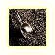

|
Все про каву |

Історія кави |
Географія кави |
|
Географія кавиСмак і аромат кави залежить від цілого ряду чинників. Важлива не тільки країна, в якій виросли зерна, а й склад грунту, погодні умови, час збору врожаю і спосіб обробки зерен. Відтінок смаку змінюється, аромат стає більш насиченим або навпаки ледь помітним. У всьому світі прийнята класифікація кави за географічною ознакою. У назві враховується місце зростання кавових зерен або порт відвантаження. Відома азіатська, африканська індонезійська, карибська, Центральноамериканська, південноамериканська кава. У Росії прийнято вважати найбільш досконалим смак італійської кави. У гористій місцевості Ємену і Саудівської Аравії виростає аравійська кави або Мокко. Більш цінною, з точки зору органолептичних якостей, вважається кава з Ємену відома також під загальною назвою Ходейда. Але от зовнішній вигляд цього виду кави досить непоказний. В Індії вирощують каву сортів Арабіка і Робуста. У гірських районах зростає кава кращих сортів: Насичены Майзор і Мадрас, знамениты своїм незвичайним ароматом. З часом в Індії вирощують все більше кави сорту Робуста. На батьківщині кави в Ефіопії до цих пір можна зустріти дикорослі дерева кави. З культивованих сортів найбільш відомі сорти Харрар та Джима. Порівняно недавно стали вирощувати каву в Кенії. Кавова промисловість цієї країни виробляє високоякісну каву, використовуючи передові технології галузі. Кава, приготована з кенійських зерен, відрізняється м'яким смаком і ніжним ароматом. У цій країні в кавовій галузі зайняті як великі господарства з їхнім неосяжними плантаціями, так і невеликі селянські господарства. Індонезія представлена на ринку двома сортами кави - посередньої якості робустою і арабікою високої якості. Також відомими постачальниками кави є острова Суматра, Ява і Сулавесі. У Південній Америці практично кожна країна може похвалитися кавовими плантаціями. У Мексиці відразу в декількох місцях вирощують каву. Це і морське узбережжя у гірських хребтів штату Веракрус, і штат Міапас на кордоні з Гватемалою. Але навіть хороша мексиканська кава не вважається одним з кращих світі, виною тому невиразний смак і слабкий аромат. Незважаючи на це у мексиканського напою приємний смак, чимось нагадує смак легкого білого вина. Чудово розвинена кавова індустрія в Колумбії. Кава Арабіка, вирощена в цій країні, проходить спеціальну мокру обробку і вважається одныэю з кращих у світі. Вирощуються в основному сорти Меделін, Вірменія, Манілес (прийнята скорочена назва МАМ). Колумбія займає друге місце в світі по виробництву кави. Зібрані зерна сортуються і найбільші відправляються на експорт, що залишилися зерна, так звана пасіла, продаються тільки на внутрішньому ринку. На кордоні з Колумбією в західній частині Венесуели також зростає кава. Колись Венесуела могла змагатися з Колумбією, але в кінці ХХ століття кава перестала бути головною статтею експорту, поступившись пальмою першості нафти. В даний час майже вся кава, вирощена у Венесуелі, залишається в країні. |
|||